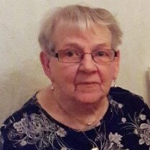

Erik Martin Dolk.

Född 19 jul 1919 i Anderstorp, Lunnebjörke, Skärkind (E) 4 .
Död 9 feb 2000 i Stuvstatorget 2, Huddinge, Huddinge (AB) 5 .
|
Född
1 jun 1925
i Lidingö (AB)
1
.
Död 4 feb 2025 2 . |
 |
|
Gertrud Dolk f Wahlström
Född 1 jun 1925 i Lidingö (AB) 1 . Död 4 feb 2025 2 . |
|||
|
Gift
19 jul 1953
3
.
Erik Martin Dolk.
Född 19 jul 1919 i Anderstorp, Lunnebjörke, Skärkind (E) 4 . Död 9 feb 2000 i Stuvstatorget 2, Huddinge, Huddinge (AB) 5 . |
Framställd 12 aug 2026 med hjälp av Disgen version 2025.